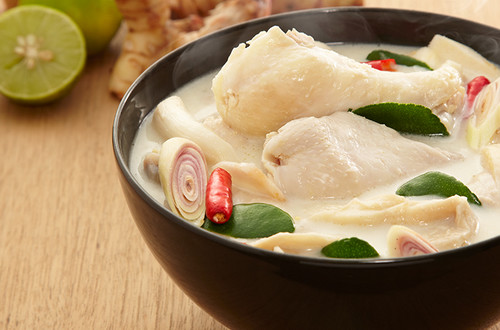

Thai Chicken Coconut Soup
Thai Chicken Coconut Soup is a popular Thai soup, that's eaten more like a curry. The base of the dish is coconut milk, so it's creamy and rich. It's not known as being a spicy Thai dish, but it's still full of delicious and well balanced flavor.
Ingredients
- 400 grams (I used 2 chicken breasts)
- 6 cups coconut milk (If you use a can or box of coconut milk, you might want to add some water to make it less thick)
- 1 thumb chunk of galangal
- 3 stalks of lemongrass
- 1 big white onion (or 2 small white onions)
- 2 tomatoes
- 6 kaffir lime leaves
- 200 grams of oyster mushrooms (I used 2 big handfuls)
- 5 - 10 Thai chilies
- 1 teaspoon salt (to taste)
- 4 tablespoons of lime juice
- small bunch of cilantro
Recipe Instructions
- First take a thumb sized chunk of galangal, cut off the stems, and cut the root part into thin slices. It can be a little tough, so you might have to hit the top of your knife with your palm.
- Next grab your lemongrass, slice off the bottoms, pull off the outer skin layer, and then slice it diagonally into about 1 inch strips. This is just going to help release its amazing fragrance.
- Turn on your stove to medium heat, and add about 3 cups (or 4) of the coconut milk to a medium sized saucepan. Put the pot on the heat and immediately toss in the sliced galangal and lemongrass.
- As your coconut milk begins to heat, move back over to your cutting board and slice up the chicken. I used 2 chicken breasts for this recipe. Slice the chicken into medium sized chunks - they can be kind of big in size.
- Just before the coconut milk comes to a boil, add the chicken, and then add the other remaining 3 cups of coconut milk. Now, turn down the heat to a medium low, as you don’t want the coconut milk to heat too fast or burn.
- Prepare your Thai chilies by peeling off the stems and then just slice them diagonally. Go ahead and add them directly to the soup.
- Give the soup a quick stir, and then add about 200 grams of oyster mushrooms (it was about 2 handfuls for me).
- Your coconut milk should not boil, but just maintain a nice low heat. Because coconut milk is so delicate, when you stir, be sure to move your spoon in 1 direction only, otherwise you run the risk of the coconut milk getting too shaken and it will start to curdle. Be gentle with the coconut milk.
- Move back over to your cutting board and peel and slice 2 small white onions into thick wedges (if your onion is really big, just use 1). Immediately toss the onions into the soup
- Next, cut your tomatoes in the same way as your onions, into thick wedges. Wait until your tom kha gai is just about to boil, and then add the tomatoes.
- Take the kaffir lime leaves, break them with your hand, and toss them directly into the soup. Breaking the kaffir lime leaves is going to release their flavor.
- Now add about 1 teaspoon of salt to begin with (taste to add more)
- Mix your tom kha gai slowly and gently, for about 5 - 10 minutes, making sure it doesn’t come to a full boil - and if it does - turn down the heat to even lower. You want the chicken, onions, tomatoes, and other ingredients to be fully cooked, but you don’t want to overcook the coconut milk.
- After about 5 - 10 minutes of cooking, go ahead and turn off the heat completely.
- Go back to your cutting board, slice up a handful of fresh cilantro, and add it to the soup. Give it a quick stir, and the cilantro will cook enough from the already hot soup.
- The final step is to juice a couple of limes into a separate bowl and then add about 4 tablespoons of lime juice to the tom kha gai . Again, just give it a quick and gentle stir, and it’s ready to be served.
- Make sure you do some taste-testing to make sure it’s salty and sour enough. You may need to add a little extra salt or lime juice to get the flavor you want.
- Make sure you taste test until your tom yum is perfectly sour and salty. You might need to add more fish sauce or lime juice
- Finally, chop a handful of fresh cilantro, throw it in the soup, and give your tom yum a final stir. The lime juice and cilantro taste fresher and more vibrant when not boiled. That’s why your turn off the heat before adding them. For the creamy version of tom yum:
- I seperated about ? of the tom yum (from above) and set it aside as the clear version, and then made the other ? as the creamy version. But in any case, follow the same recipe, then continue.
- Turn your heat back on low.
- Add about 3 heaping tablespoons of Thai roasted chili sauce (nam prik pao ) and 10 tablespoons of evaporated milk. Fully dissolve the added ingredients.
- Taste test, you may need to add more lime juice or fish sauce.

All Rights Reserved